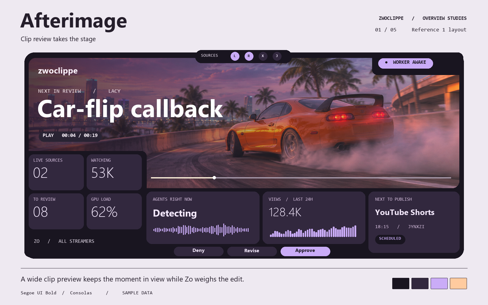
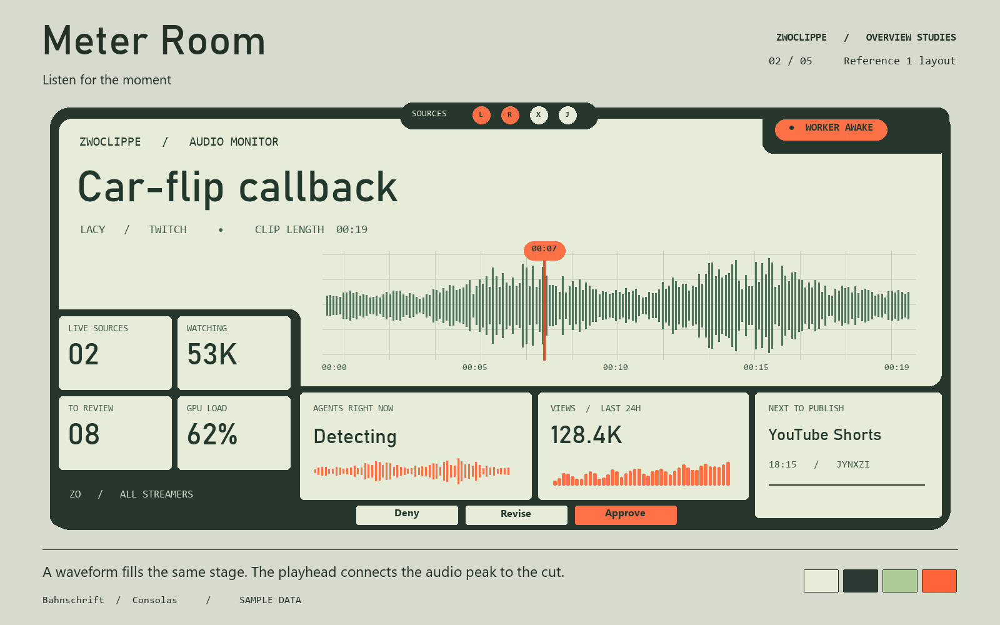
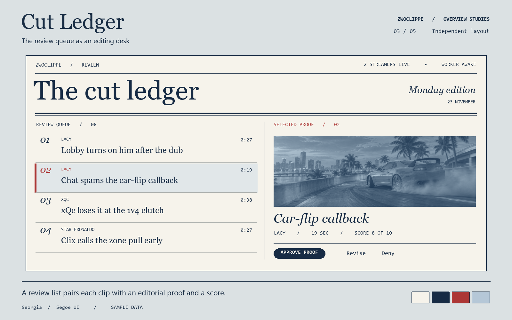
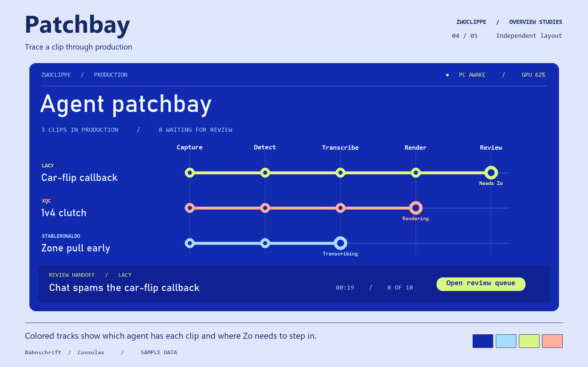
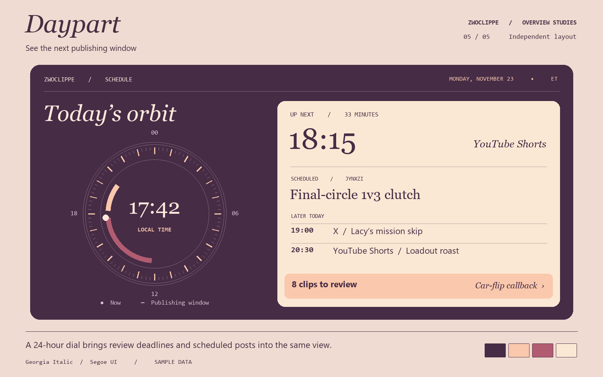

Afterimage
A plum screening room puts Lacy’s clip above the review dock.
Open a board to inspect the full interface, palette and typography.

A plum screening room puts Lacy’s clip above the review dock.

A sage audio console puts the waveform and playhead in the same stepped frame.

Scan the clip list on paper-colored rows, then check the selected proof alongside it.

Trace each streamer’s clip across capture, detection, transcription, render and review.

Read the 24-hour dial alongside the next publishing slot and the clips awaiting review.